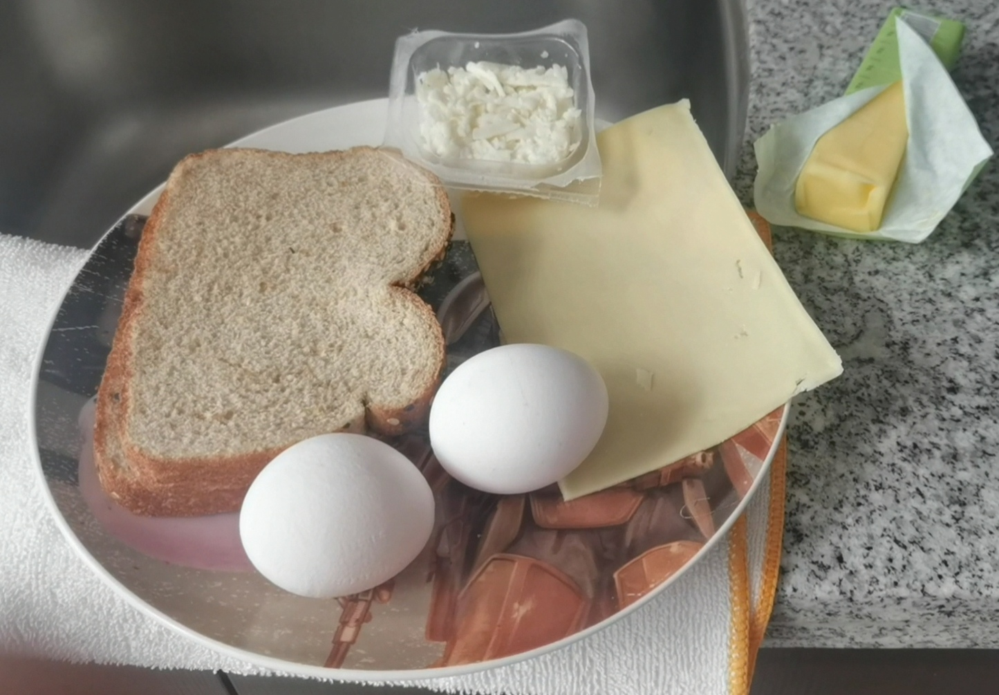

Croque Madame

Un delicioso sandwich proveniente del croque monsieur, con un un huevo frito encima.
Éste sandwich tiene una capa de jamón, queso, un pan crujiente.
Cubierto con una tradicional salza de bechamel o alguna salza casera.
INGREDIENTES
CROQUE MONSIEUR2 rebanadas depan brioche
2 cucharadas de mantequilla
1 rebanada de jamón
1 rebanada de queso
1 rebanada de queso rayado
Huevo
1 cucharada de mantequilla
2 huevos grandes
pimienta al gusto